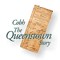
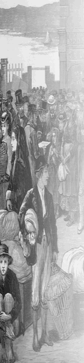
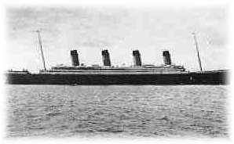

ATTRACTIONS AT COBH

Queenstown it was for some decades before reverting to its old Irish name in 1922 - the Cobh (cove) of Cork. Is there anywhere in Ireland more full of poignant memories than this embarkation point for America? From here hundreds of thousands of mostly hungry and penniless Irish men and women left to build a new life, especially in the Famine years of 1844-48. Many thrived and prospered, but many died on the journey in the terrible travelling conditions of the time.
Cobh is situated on Great Island, one of the three large islands in Cork harbour which are all now joined by roads and bridges - Little Island and Fota are the others.
The harbour is one of the largest and safest anywhere, being capable of taking the largest vessels afloat. The great Transatlantic liners used to come in up to the 1950s.
Some of the main attractions are
- The Queenstown Heritage Center
- The Titanic Exhibition
- Fota WIldlife Park


Millions of emigrants departed from the historic port town of Cobh. Many emigrants went on to find fame and fortune while others had to endure great hardships.
From 1848 - 1950 over 6 million adults and children emigrated from Ireland - over 2.5 million departed from Cobh, making it the single most important port of emigration.
This exodus from Ireland was largely as a result of poverty, crop failures, the land system and a lack of opportunity. Irish emigration reached unprecedented proportions during the famine as people fled from hunger and disease.
Many famine emigrants went initially to British North America (now Canada) because of fare structures and government regulations, but the majority subsequently settled in the United States. The famine resulted as a consequence of widespread potato crop failure. Failure of the crop was not unusual in Ireland so the partial failures in 1845 did not cause particular concern. In 1846 the potato crop failed completely and in the years 1847-1849 there was either total or partial crop failure of whatever potato crop could be planted. Escape was seen by many as the only chance for survival : between 1845 and 1851 over 1,500,000 people emigrated from Ireland This was more than had left the country in the previous half century..
Annie MooreLocated outside the Cobh Heritage Centre is the statue of Annie Moore and her two brothers. |
| Annie Moore became the first ever emigrant to be processed in Ellis Island when it officially opened on 1st January 1892. Annie and her brothers sailed from Queenstown on the SS Nevada on the 20th December and arrived after 12 days of travelling in steerage. The statue outside Cobh Heritage Centre was unveiled by President Mary Robinson on the 9th February 1993. A similar statue of Annie can be found in Ellis Island, New York which represents not only the honour of her being the first emigrant to pass through Ellis Island but also stands as a symbol of the many Irish who have embarked on that very same journey. |  | |
On the 11th April 1912 the newly built Titanic called to the port of Queenstown (now known as Cobh) on her maiden voyage. Titanic had set out from Southampton and called to Cherbourg before continuing onto Queenstown.
The pride of the White Star Line arrived at Roches Point (the outer anchorage of Queenstown Harbour) at 11.30am. Meanwhile the intending passengers went to the White Star Line pier to board the tenders PS Ireland and PS America which would ferry them to the waiting liner. A total of 123 passengers embarked at Queenstown, three travelled first class, seven second class while the remainder travelled in steerage (3rd class). After boarding the tenders they proceeded to the Deepwater Quay (where Cobh Heritage Centre is now located) to load mail bags from the mail train. The two tenders then travelled out to the Titanic along with a number of smaller vessels carrying local vendors selling local specialities such as lace and crafts to the wealthy passengers onboard.
At 1.30pm an exchange of whistles indicated that the tenders' business was complete and the Titanic weighed anchor to the strains of "Erin's Lament" and "A Nation Once Again" played on the bagpipes by steerage passenger Eugene Daly. A total of 1,308 passengers were on board as they left Queenstown together with 898 crew members making a total of 2,206 people on board as she embarked on her final journey
Fota WildLife Park
Fota Wildlife Park is Ireland's only Wildlife Park. In this rural setting one can view rare and endangered species of wildlife in surroundings which have been developed as close as possible to their natural environment.
Established in 1983 with the primary aim of conservation Fota has more than 70 species of exotic wildlife in open natural surroundings with no obvious barriers. Giraffes, zebras, ostrich and antelope roam together in 40 acres of grassland, much as they would in the African savannah, monkeys swing through trees on lake islands, while kangaroos, macaws and lemurs have complete freedom of the Park. Only the cheetahs have a conventional fence.
A great many of the species at Fota are under serious threat in the wild. Only c. 10,000 cheetahs remain in their natural habitat and Fota Wildlife Park is the world's leading breeder of this endangered species.
Also being bred at Fota is the Scimitar horned Oryx brought to the brink of extinction but being re-introduced in its native North Africa; the Liontailed Macaque of which only c. 800 remain in a tiny patch of Indian forest; and many other species for which wildlife parks such as Fota are their only chance of survival.

The White tailed Sea Eagle became extinct in Ireland in the early 1900's but is now being re-introduced to the wild in Kerry. This magnificent bird of prey is held for breeding at Fota, where they can be seen by visitors.
Just beside the Wildlife Park is the internationally renowned Fota Arboretum, which has a beautiful collection of trees and shrubs, from all over the world, including China, Japan, Australia and the Himalayas.
There is no additional charge for entry to the Arboretum. Fota Wildlife Park is open daily April-September incl., and on weekends in October, from 10 am on weekdays and 11 am on Sundays. Last admissions are at 5 pm. Amenities include coffee shop, tour train, picnic benches and comprehensive information/identification panels on all major species.


{kind=link}